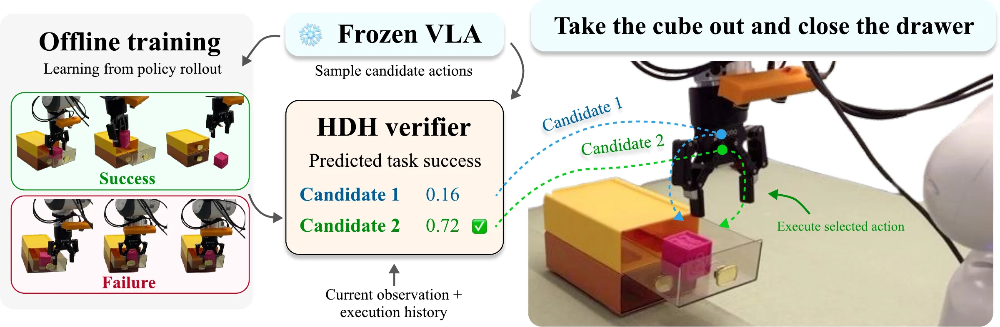
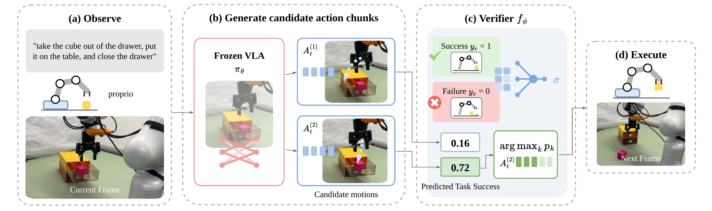

TL;DRA small verifier, trained only on whether a frozen VLA's past rollouts succeeded, picks the better of two sampled action chunks at every query. It needs no VLA fine-tuning and adds 5.4% median latency.
A VLA's sampled action chunks vary in quality, and large VLM verifiers are too slow to check them at every query. HDH trains a compact verifier on the terminal outcomes of the frozen policy's past rollouts and uses it to choose between two sampled candidates.
Vision-language-action (VLA) models have made significant progress in general-purpose robotic manipulation. However, sampled action sequences can be ineffective, while evaluating alternatives with computationally expensive verifiers adds latency at each policy query. In this work, we propose HDH, a lightweight framework that uses hindsight from a frozen VLA's own deployments to improve action verification. The framework has three stages. First, we deploy the policy and collect its autonomous rollouts. We then train a compact action verifier to assign each action chunk a predicted task-success score. Finally, the frozen VLA generates action candidates, and the verifier selects the candidate with the highest score for execution. Across four LIBERO-10 tasks, HDH achieves an average success rate of 82.3% and on three real-world manipulation tasks, HDH improves average success over the baseline policy by 22.6%.

Fig. 1We collect autonomous rollouts of the frozen policy and use their terminal success and failure to train a compact verifier (left). At each query, the verifier scores sampled action chunks from the current observation and execution history (center), and the robot executes the highest-scoring candidate (right).
Franka Panda with the DROID setup and π0.5-DROID, fine-tuned with LoRA on 80 demonstrations and controlled at 15 Hz. HDH compares two candidates per query and executes 8 actions of the selected 16-step chunk. 50 trials per task and method.
Individual, unedited episodes at 2× speed, including failures of both methods. Choose an episode under each video.
The VLA is never updated. HDH changes which sampled action is executed, not how candidates are generated.
Deploy the frozen policy with one sampled chunk per query and record autonomous rollouts with their terminal success or failure.
Label every query of an episode with that episode's outcome and learn to predict eventual task success of the executed prefix. Splits are made per episode.
Draw K = 2 candidates with independently seeded flow-matching noise, score both, and execute the first H = 8 actions of the best one.

Fig. 2(a) Given the instruction, images and proprioception, (b) we sample candidate action chunks from a frozen VLA. (c) A compact verifier trained on terminal rollout outcomes assigns each candidate a predicted task-success score. (d) The robot executes the first H actions of the best candidate.
All six methods share one frozen π0.5 fine-tuned on 50 public LIBERO demonstrations, evaluated on 50 held-out initial states per task over three runs. Timing is end-to-end per query on one H100, including simulation.
| Method | Soup + Sauce | Bowl + Drawer | Mug + Pudding | Soup + Cheese | Average | p50 (ms) | p95 (ms) |
|---|---|---|---|---|---|---|---|
| Baseline | 73.3 ± 2.5 | 96.0 ± 0.0 | 66.0 ± 2.8 | 80.0 ± 4.3 | 78.8 | 681 | 760 |
| Random | 64.0 ± 2.8 | 95.3 ± 0.9 | 66.7 ± 6.6 | 84.0 ± 4.9 | 77.5 | 692 | 776 |
| GPT-5† | 73.3 | 93.3 | 73.3 | 73.3 | 78.3 | 27,674 | 46,911 |
| GPT-6 | 69.3 ± 6.6 | 96.7 ± 0.9 | 72.0 ± 7.5 | 84.7 ± 2.5 | 80.7 | 7,403 | 10,270 |
| HDM | 70.0 ± 3.3 | 98.7 ± 0.9 | 66.7 ± 8.4 | 86.0 ± 4.3 | 80.3 | 716 | 799 |
| HDH (Ours) | 76.7 ± 2.5 | 97.3 ± 2.5 | 72.0 ± 5.9 | 83.3 ± 5.0 | 82.3 | 718 | 796 |
†GPT-5 uses 15 states per task in a single run because of its slower inference.
Median time per query (log scale) against average success. Hover a point.
Unweighted mean over four tasks (axis from 70%).
@article{hsieh2026hdh,
title = {Learning Low-Latency Action Verification for Frozen Vision-Language-Action Models},
author = {Hsieh, Wen-Han and Zheng, Ken Jiankun and Chen, Chia-Chien and Chan, David and Darrell, Trevor},
journal = {arXiv preprint},
year = {2026}
}